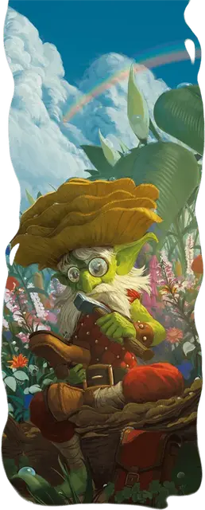

Лепрекон
Leprechaun
Маленькая Фея, нейтральная

Класс Доспеха 13
Хиты 52 (8к6 + 24)
Скорость 30 футов
| мод | спас | ||
|---|---|---|---|
| СИЛ | 6 | −2 | −2 |
| ЛОВ | 17 | +3 | +3 |
| ТЕЛ | 16 | +3 | +5 |
| мод | спас | ||
|---|---|---|---|
| ИНТ | 12 | +1 | +1 |
| МДР | 14 | +2 | +4 |
| ХАР | 18 | +4 | +4 |
Навыки Восприятие +4, Ловкость рук +7, Скрытность +5
Чувства тёмное зрение 60 футов, пассивное Восприятие 14
Языки Общий, Сильван
Опасность 4 (1100 опыта)
Бонус мастерства +2
Особенности
Трудолюбие. Лепрекон владеет всеми инструментами ремесленников, удваивая свой бонус мастерства в проверках характеристик при их использовании.
Безотказность. Когда существо предлагает лепрекону принять участие в кутеже или прочих увеселениях, будь то пение, танец или вкусная еда, лепрекон должен преуспеть в спасброске Мудрости Сл 15, иначе становясь очарованным на 24 часа. Будучи очарованным подобным образом, лепрекон участвует в предложенных активностях, относится к существу как к близкому другу и защищает его от вреда. Состояние очарования оканчивается в том случае, если существо или его союзники наносят лепрекону урон, заставляют его совершить спасбросок или что-либо украдут у него.
Действия
Мультиатака. Лепрекон совершает две атаки Киянкой сапожника и может применить Использование заклинаний.
Киянка сапожника. . Рукопашная атака оружием: +5 к попаданию, досягаемость 5 фт., одна цель. Попадание: 6 (1к6 + 3) дробящего урона плюс 13 (3к8) урона силовым полем. Если цель является существом, то её скорость уменьшается вдвое до начала следующего хода лепрекона.
Дар удачи (1/день). Лепрекон касается существа и магически наделяет его крупицей удачи. Существо получает реакцию лепрекона Потрясающая удача и может использовать её три раза, после чего дар утрачивает свою силу. Лепрекон может отозвать этот дар в любой момент (действие не требуется).
Существо может находиться под эффектом только одного Дара удачи одновременно.
Использование заклинаний. Лепрекон накладывает одно из следующих заклинаний, без использования материальных компонентов используя Харизму в качестве базовой характеристики (Сл спасброска 14):
• Неограниченно: починка [mending] (действием), фокусы [prestidigitation]
• 2/день каждое: невидимость [invisibility], воображаемая сила [phantasmal force]
• 1/день каждое: изготовление [fabricate] (действием), фальшивый двойник [mislead]
Бонусные действия
Хитрая уловка. Лепрекон совершает действие Отход, либо действие Засада, либо проверку Ловкости (Ловкость рук).
Реакции
Потрясающая удача. Когда лепрекон проваливает проверку характеристики, бросок атаки или спасбросок, он может совершить бросок новой кости к20 и выбрать, какое из выпавших значений использовать, потенциально обращая провал в успех.
Описание
Лепреконы являются воплощениями обычаев гостеприимства и взаимопомощи Страны Фей. Сила этих обычаев наделяет лепреконов глубокой связью с починкой и сотворением вещей. Будучи трудолюбивыми и гордыми, лепреконы направляют эту творческую силу в свои инструменты, используя их для быстрой починки поврежденных предметов, создания новых из сырья и воплощения идей в ярких иллюзиях.
Соблюдение лепреконами устоев Страны Фей приносит им огромную удачу, но за нее приходится платить. Те же самые магические законы заставляют лепреконов использовать свои силы во благо тех, кто дарит им подарки. Лепреконы презирают жадность и неодобрительно относятся к тем, кто выдвигает требования, не предложив предварительно подарок, или, что еще хуже, к тем, кто пытается их обокрасть. Они с удовольствием подшучивают над подобными глупцами, обкрадывая их в ответ.
Лепреконы гордятся своим внешним видом, одеваясь в нарядные костюмы, в которых обычно присутствуют красные ткани, блестящие пояса и пряжки, а также естественные символы леса. Подобная манера одеваться подчеркивает их ярко-зеленую кожу, пышные волосы и жизнерадостный настрой.